Analyze code
Using the Remote Type Hierarchy and Remote Call Hierarchy views, you can view classes and
members, functions and their relationships in a variety of different ways
To use the Remote Type Hierarchy view:
- In the Project Explorer view, expand your project. Select your source file
and open it in the remote C/C++ editor.
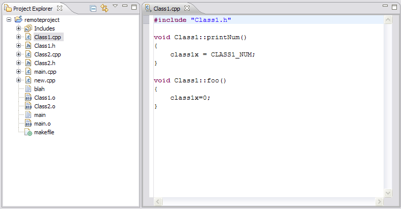
- Select the element name in the editor. Right-click and select Open Type Hierarchy.
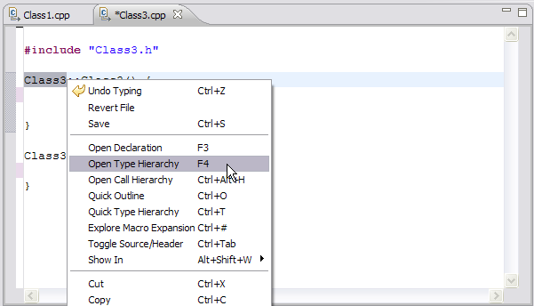
- The Remote Type Hierarchy view opens up and shows the element's hierarchy.
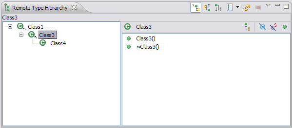
- Click the Show the Supertype Hierarchy button to see a hierarchy showing the type's parent
elements. This view shows the results of going up the type hierarchy.
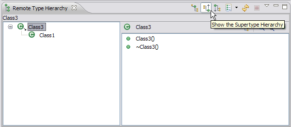
- Click the Show the Subtype Hierarchy button.
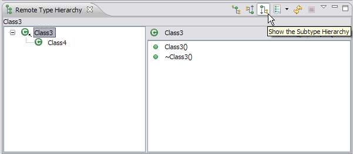
- Click the Show the Subtype Hierarchy button.
- In the hierarchy tree pane, select any element, right-click and select Focus On.
The selected element and its hierarchy is presented in the hierarchy view.
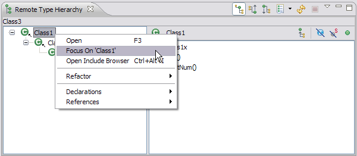
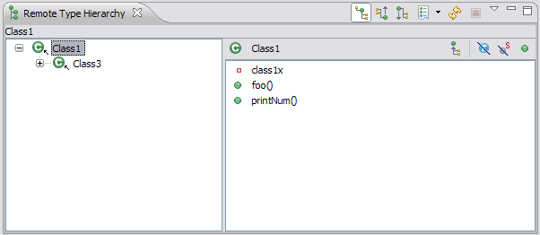
To use the Remote Call Hierarchy view:
- In the Project Explorer view, expand your project. Select your source file
and open it in the remote C/C++ editor.
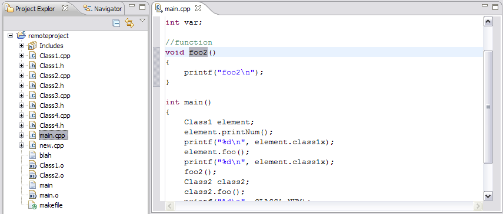
- Select the function name in the editor. Right-click and select Open Call Hierarchy.
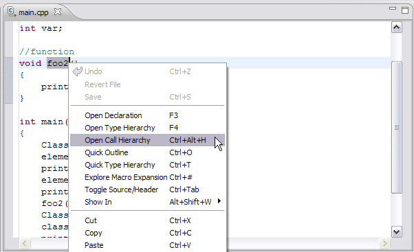
- The Remote Call Hierarchy view opens up and shows the function's callers.
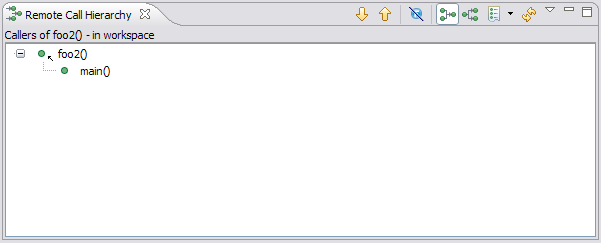
- To get the callees of the function. Click the Show Callees button.
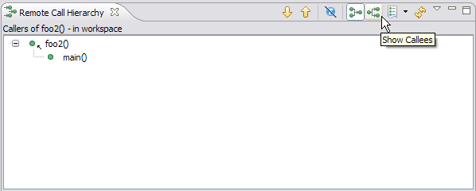
Related reference
Remote Type Hierarchy view
Remote Call Hierarchy view